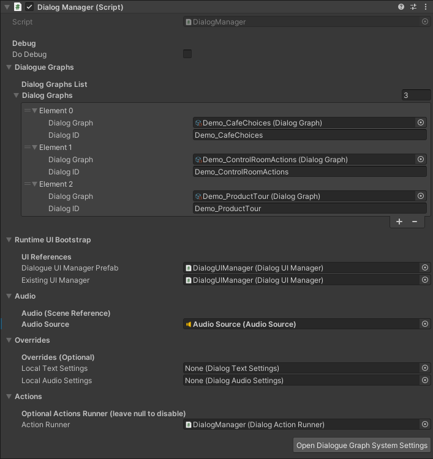

Installation
Use this page when importing the asset into a project or verifying that a scene has the minimum wiring required for runtime playback.
Unity version
The codebase targets Unity 2021.3 LTS or newer. The project changelog also indicates validation across later LTS/editor versions.
Package dependencies
From the current Packages/manifest.json, the key runtime/editor dependencies are com.unity.textmeshpro, com.unity.ugui, and the editor GraphView APIs used in authoring tools.
Scene setup checklist
- Add a
DialogManagerto the scene. - Assign a
DialogUIControllertoDialogManager.uiPanel. - Assign an
AudioSourceif voice or UI audio is required. - Add one or more
DialogGraphentries indialogGraphs. - Map each graph to a stable
dialogID.
dialogID mapping on the manager rather than the graph asset itself.
Optional runtime pieces
DialogActionRunnerif you use action nodesDialogueHistoryandDialogueHistoryViewif you want backlog support
Global settings asset
The settings runtime loader expects the master settings asset at Resources/DialogSettingsSO/DialogSystemSettings. In this repository, the editor settings window creates and maintains that asset automatically.
Open Tools → Dialogue Graph System → Settings to create or verify the master settings asset and its sub-assets.
Input system notes
The code supports legacy input and newer input packages through InputHelper. If you use the new Input System only, make sure the scene EventSystem is configured accordingly.
AI extension setup
The optional AI extension depends on the main dialog system, a DialogAISettings asset in a Resources folder, and at least one provider asset such as OpenAI, Gemini, Ollama, or a custom JSON provider.
- Create a provider asset under
Assets/DialogSystemAIExtension/ProviderAssets, duplicate one fromAssets/DialogSystemAIExtension/Samples/ExampleAssets/Provider, or use your own folder. - Hosted providers require your own API key; shipped provider samples are templates only.
- For OpenAI-compatible services, prefer a root
baseUrlplus/v1/chat/completionsinchatEndpoint. - Review the AI draft preview before confirming any change. The shipped AI workflow is preview-first.
Verify your install
- Open
Assets/DialogGraphSystem/DemoScenes/DialogueDemo.unity. - Enter Play Mode and select any of the three sample graphs from the demo menu.
- Confirm line reveal, choice display, and skip/autoplay behavior.
- Open the graph editor via
Tools → Dialogue Graph System → Dialogue Graphand load one of the sample graphs fromAssets/DialogGraphSystem/Graphs/.
Suggested visuals
DialogManager inspector

Shows graph mapping, UI panel assignment, and optional runner wiring.
Settings window

Shows how the global settings asset is created and managed.